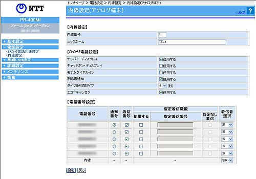

電話設定−内線設定−内線設定（アナログ端末）
ひかり電話サービスをご契約でない場合は、ひかり電話の設定に関するメニューや画面が表示されません。
アナログ端末の内線設定を行います。
設定値を選択・入力したあとに［設定］をクリックすると設定内容が反映され、設定内容が保存されます。
※「Web設定」画面に表示されているボタンについての説明は
こちら

［内線設定］
内線の設定をします。
内線番号
（初期値：下記の表を参照）
設定する内線番号を入力します。
「1〜9」、「10〜99」の1〜2桁を設定できます。
※
※
重複した内線番号は設定できません。
「0」を設定することはできません。
ニックネーム
（初期値：下記の表を参照）
ニックネームを入力します。
使用できるのは半角英数字と記号で最大64文字です。
＜初期値＞
内線番号
ニックネーム
1
TEL1
2
TEL2
［ひかり電話設定］
ひかり電話の設定をします。
ナンバー・ディスプレイ
（初期値：使用する）
ナンバー・ディスプレイを使用する場合にチェックします。
＜お知らせ＞
ナンバー・ディスプレイの機能をご利用になるには、 マーク、 マーク、 マークのついたナンバー・ディスプレイ対応の電話機が必要です。
ナンバー・ディスプレイサービスをご利用になる場合は、ナンバー・ディスプレイサービスのご契約が必要です。
初期値は、「使用する」に設定されています。
ナンバー・ディスプレイをご契約でない場合やナンバー・ディスプレイに対応していない電話機を接続する場合は「使用する」のチェックを外してください。
電話機によっては、発信者番号などが正しく表示されないことがあります。
電話機の表示内容は、お使いの機器によって異なります。
キャッチホン・ディスプレイ
（初期値：使用しない）
キャッチホン・ディスプレイを使用する場合にチェックします。ナンバー・ディスプレイを「使用する」に設定した場合のみ使用できます。
＜お知らせ＞
キャッチホン・ディスプレイの機能をご利用になるには、 マークのついたキャッチホン・ディスプレイ対応の電話機が必要です。
キャッチホン・ディスプレイサービスをご利用になる場合は、ナンバー・ディスプレイと下記のいずれかのご契約が必要です。
・
キャッチホン
・
複数チャネルサービス「複数チャネル（ダブルチャネル）」
キャッチホン・ディスプレイの機能をご利用になるには、ナンバー・ディスプレイとキャッチホン・ディスプレイの両方を「使用する」に設定してください。ナンバー・ディスプレイが「使用しない」になっているとご利用になれません。
電話機によっては、発信者番号などが正しく表示されないことがあります。
電話機の表示内容は、お使いの機器によって異なります。
モデムダイヤルイン
（初期値：使用しない）
モデムダイヤルインを使用する場合にチェックします。
＜お知らせ＞
モデムダイヤルイン対応の電話機などが必要です。操作方法は、ご利用になる電話機などの取扱説明書などをご覧ください。
割込音通知
（初期値：使用する）
複数チャネルサービス「複数チャネル（ダブルチャネル）」をご契約の上での通話中や、内線通話中に、電話がかかってきたことを割込音で通知する場合にチェックします。
＜お知らせ＞
キャッチホン契約の場合、「割込音通知」設定に関わらずキャッチホンの「プップッ・・・」という割込音が聞こえます。
優先着信ポートを有効に設定した場合、割込音通知はご利用になれません。割込音通知をご利用になる場合は、優先着信ポートの設定を無効にしてください。
複数チャネルサービス「複数チャネル（ダブルチャネル）」で割込音通知を「使用する」に設定していても、ファクス通信中の電話機には割込音は動作しません。他に着信する電話機がない場合、発信者側に話中音が聞こえます。
ダイヤル桁間タイマ
（初期値：4秒）
電話機からのダイヤル入力を受け付ける時間を設定します。
設定できる値は、「4〜8」（秒）です。
ダイヤル桁間タイマの設定値を長めに設定すると、電話機からダイヤル操作を行った際に発信するまでの時間が長くなります。
エコーキャンセラ
（初期値：使用する）
エコーキャンセラ
を使用する場合にチェックします。
エコーキャンセラを使用すると、エコーやハウリングを防止することができます。
［電話番号設定］
電話番号（外線）ごとの設定、内線着信時の着信音を設定します。
電話番号
ご契約された電話番号（外線）が表示されます。
通知番号
（初期値：契約者回線番号）
発信時、電話をかけた相手先に通知される発信者番号を、どの電話番号にするかを選択します。
＜お知らせ＞
「着信番号」として利用していない電話番号は「通知番号」に設定することはできません。
「通知番号」に設定した電話番号に「指定着信機能」を設定しても、相手先に「指定着信番号」は通知されません。
着信番号
（初期値：すべての電話番号）
ご契約された電話番号（外線番号）のうち、この電話機に着信させる電話番号を設定します。
着信番号は複数選択できます。
＜お知らせ＞
優先着信ポートを有効に設定した場合、アナログ端末(電話機1-2)で同一の着信番号が設定されている必要があります。同一の着信番号が1つもない状態に変更する場合は、優先着信ポートの設定を無効にしてください。
着信番号のチェックを外す場合は、指定着信機能の「使用する」のチェックを外してください。
指定着信機能
（初期値：使用しない）
指定着信機能を利用することにより、相手の方が電話をかけるときに電話番号に続けて指定着信番号をダイヤルすることで、この電話機ポートに接続された電話機にだけに着信させることができます。
設定は下記のとおりです。
「使用する」
指定着信機能を使用する場合は、指定着信機能を使用する電話番号の「使用する」にチェックし、「指定着信番号」に使用する指定着信番号を入力します。
「指定着信番号」
1〜19桁の数字を入力します。
「指定なし着信」
指定着信番号がある場合とない場合の両方の着信を受け付ける場合には「指定なし着信」にチェックします。
＜お知らせ＞
指定着信機能は電話機1、2ポートのどちらかで、かつ、1つの電話番号（外線番号）でのみ使用できます。他のポートや電話番号で指定着信機能を使用する場合は、「使用する」のチェックを外してください。
指定着信番号で着信した場合には、キャッチホンはご利用いただけません。
指定着信番号は0〜9の任意の数字で、最大19桁となります。
指定着信番号をダイヤルして発信することができる電話回線は、ISDN、ひかり電話、携帯電話です。なお、携帯電話が指定着信番号付きの発信が可能かどうかは、携帯電話事業者により異なります。
ひかり電話から指定着信番号を発信した場合は、ひかり電話以外の回線やNTT東日本またはNTT西日本のひかり電話提供エリア外へ指定着信させることはできません。
着信音選択
（初期値：外線用「IR」、内線用「SIR」）
電話番号ごとの着信音、内線着信時の着信音を設定できます。
「IR」、「SIR」から選択します。
・
「IR」
着信音が「1秒あり＋2秒なし」を繰り返します。
（「プルルルー、プルルルー・・・」と鳴動します。）
・
「SIR」
着信音が「0.3秒あり＋0.3秒なし＋0.3秒あり＋2.1秒なし」を繰り返します。
（「プルルッ、プルルッ・・・」と鳴動します。）
＜お知らせ＞
着信音選択で「SIR」を選択した場合、電話機のメロディ着信機能が正常に動作しない場合があります。その場合は、本商品の着信音選択を「IR」に設定するか、電話機を通常の着信音に設定してください。
着信音「IR」 「SIR」で実際に鳴る音は、お使いの電話機によって異なります。
＜お知らせ＞
アナログ端末の設定は、電話機からも行えます。設定方法は、ひかり電話の使いかた「電話機からひかり電話の設定をするには」をご覧ください。
↑ページのトップへ
 内線番号（初期値：下記の表を参照）
内線番号（初期値：下記の表を参照）